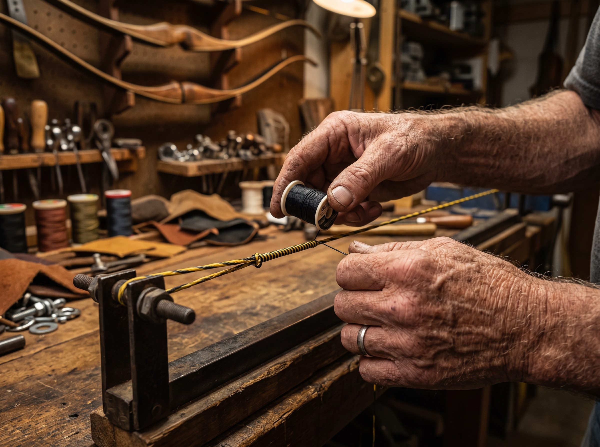
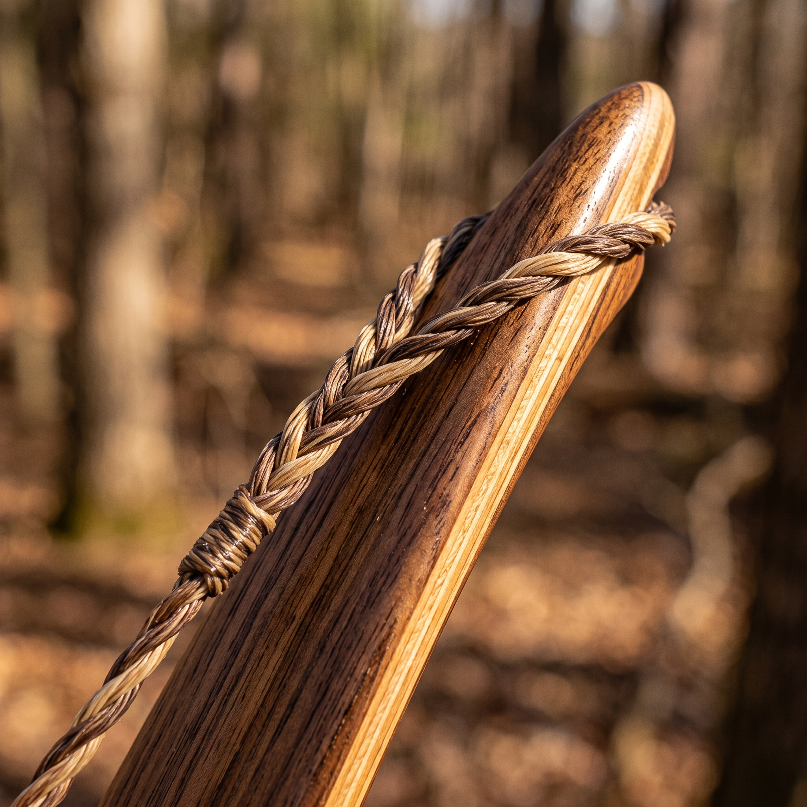
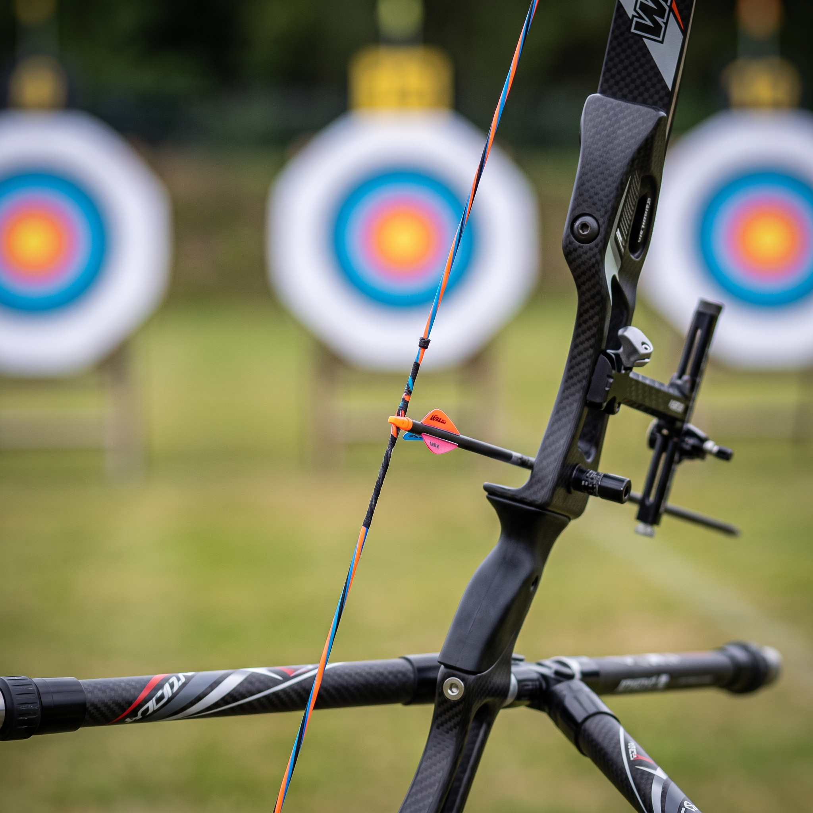
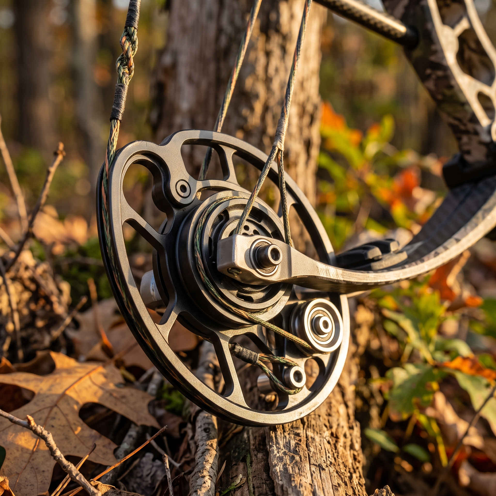
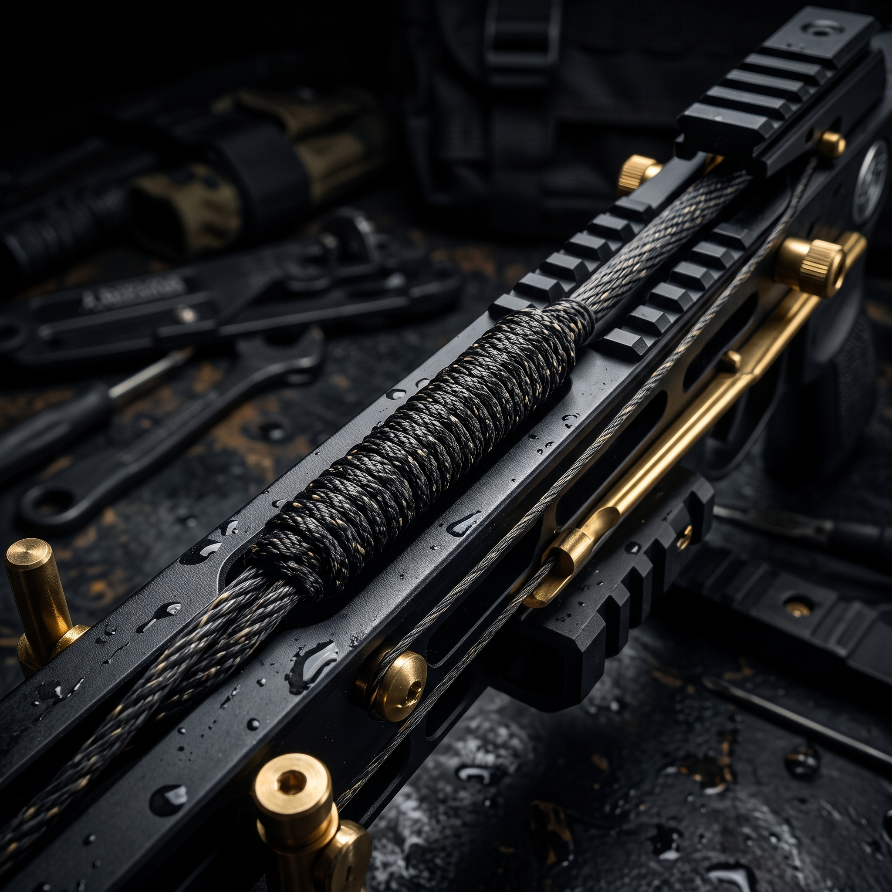

Cuerdas a medida para arcos tradicionales, olímpicos, compuestos y ballestas. Elaboradas hilo a hilo por experto artesano para tiro deportivo, recreativo y caza.
Elegí material, combinación de colores, entorchados (servinados) y la medida exacta según la especificación de tu arco.
Años de experiencia en la fabricación técnica garantizan una cuerda equilibrada, sin elongación indeseada ni estiramiento posterior.
Despachamos desde Mendoza a cualquier provincia de Argentina mediante expreso o transporte a convenir.

En nuestro taller ubicado en Chacras de Coria, Luján de Cuyo, Mendoza, cada cuerda se elabora de manera artesanal sobre banco de trabajo calibrado, cuidando la tensión uniforme de cada hilo y el entorchado meticuloso de los ojales.
Sumamos décadas de experiencia en arquería, caza y confección manual para ofrecerte repuestos de calidad superior que maximizan la velocidad, constancia y agrupamiento de tus disparos.
Hacé clic en "Ver especificaciones" para conocer los detalles técnicos.

Diseñada específicamente para proteger la estructura de las palas de madera manteniendo un disparo fluido.

Respuesta ultrarrápida y consistencia para tiro deportivo con arcos sintéticos de alta gama.

Juegos de cuerda y cables de alto rendimiento para soportar la fricción de poleas y alto libraje.

Estructura reforzada para resistir la máxima tensión y potencia de impacto extrema.
Trabajamos exclusivamente con la marca líder mundial en hilos y servinados para garantizar rendimiento profesional sin concesiones.
Composición: 67% SK75 Dyneema / 33% Vectran.
El estándar internacional para arcos compuestos. Cero estiramiento térmico y rotación nula.
Composición: 100% SK75 Dyneema.
Muy alta velocidad de salida. La opción preferida por competidores de recurvo olímpico.
Composición: 100% Polyester.
Mayor durabilidad que el B50 tradicional. Absorbe impactos protegiendo arcos de madera.
Composición: 100% Dyneema de ultra menor diámetro.
Micro-hebras de máxima resistencia para empaquetado denso en cuerdas de ballestas y libraje extremo.
Hilo delgado de Spectra/Dyneema súper suave. Ideal para ojales (loops) y paso por poleas pequeñas.
Diámetro .015". Súper resistente y flexible para servinado de ojales y terminaciones en recurvos.
100% Spectra de alta tenacidad. Resistencia abrasiva máxima contra el riel de ballestas o separadores.
Mezcla patentada de resina y fibra. Adherencia superior en el servinado central para fijar el nock.
Completá los datos técnicos de tu equipo. Nos pondremos en contacto directamente vía WhatsApp con Piero para confirmar detalles y coordinar el envío.
Información clave sobre materiales BCY, toma de medidas, envíos y cuidados de tus cuerdas.
La elección del material depende del tipo de arco y sus palas. Para arcos tradicionales de madera sin refuerzo en los tips, se recomienda BCY B55 Dacron por su elasticidad controlada que protege la pala de impactos secos. Para arcos olímpicos y compuestos, utilizamos BCY 8125 Fast Flight, BCY 452X o BCY Mercury 2. Estas fibras avanzadas de SK75/Dyneema ofrecen estiramiento prácticamente nulo, aumentando la velocidad de salida de la flecha y manteniendo la puesta a punto intacta.
La medida de la cuerda suele expresarse en longitud real en pulgadas o en estándar AMO. Si tenés dudas sobre cómo medir la cuerda o la distancia de los entorchados (servinados) centrales y de ojales, podés escribirnos directamente. En nuestro taller artesanal en Chacras de Coria, Mendoza, te guiamos paso a paso sobre cómo medir la cuerda vieja con cinta métrica bajo ligera tensión para replicar la distancia exacta.
Nuestra garantía cubre strictly defectos de fabricación artesanal, fallas estructurales del hilo BCY o desarme involuntario de servinados. La garantía NO cubre daños derivados de mal uso (disparos en seco / dry fire), roces por falta de cera, almacenamiento en zonas de humedad o calor extremo, ni cortes por bordes filosos no pulidos en el arnés o poleas del arco.
Para maximizar la durabilidad, es fundamental aplicar cera de abeja o cera sintética especial para cuerdas de manera regular frotándola con los dedos para humectar las hebras internas. Guardá el arco en funda protegida del sol directo y fuentes de calor, e inspeccioná visualmente los servinados antes de cada sesión de tiro.
Sí, realizamos envíos de cuerdas de arco artesanales a todas las provincias de Argentina. Despachamos desde Mendoza mediante el servicio de expreso, transporte de encomiendas o correo a convenir con el cliente en empaques individuales de protección.